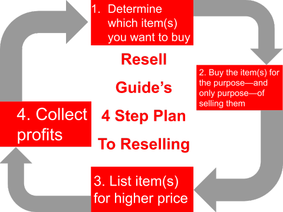

Resell Guide will teach you everything you need to know to make money reselling Supreme and Hype sneakers. Resell Guide is designed to take absolute newbies to absolute pros when it comes to reselling. We will tell you how to get started, what sites to buy items on, and where and how to sell items. We have lots of examples, information, pictures, and videos on our pages to help you out. You can get started below.
An overview of reselling
Reselling is the act of buying an item for the purpose—and only purpose—of selling the item for a higher price. You can resell any item, but here on Resell Guide, we focus on Hype items. Hype items consist of items from Supreme, Off-White, Yeezy, Travis Scott, Jordan, etc.
Reselling is the act of buying an item for the purpose—and only purpose—of selling the item for a higher price. You can resell any item, but here on Resell Guide, we focus on Hype items. Hype items consist of items from Supreme, Off-White, Yeezy, Travis Scott, Jordan, etc.
Determining which Supreme item(s) to buy
You will determine which items you buy by comparing the item's retail price with its presale price. To start, follow these steps:
- To find a Supreme item's retail price go on Supreme Community and click on the DropList page. Then click on the week with the latest date.
- Next, goto StockX. After you have StockX open, type in item by item for the current week's droplist. Some Supreme items come in more than one color; however, you can only buy one style (color and size) per item. It is best to check each item's style on StockX and buy the style that has the highest bid. If each style has a high amount of presale or has around the same amount of presale, then go for the item in a size medium. Size medium has the most stock, so it is the easiest to buy.
-
Now, determine how much profit you will make.
The formula for determining profit:
(item's highest bid - transaction fee - payment processing fee) - (items retail price + shipping and handling + taxes)
The item's highest bid can be found on the item's StockX page. The transaction fee depends on your StockX account's seller level. We explain more about this on our StockX page. The payment processing fee is 3% of the item's highest bid. The item's retail price is found on SupremeCommunity. The item's shipping and handling is most likely $10. We go over Supreme's shipping and handling rates on our Supreme page. The amount you have to pay in sales tax depends on your state and local sales tax rates. You can determine your state and local sales tax rate on the Tax Foundation's website. - If you have chosen more than one item, then you will have to determine which order you will buy the items in. Attempt to buy the item with the most hype first, then work your way down. You can gauge an item's hype by seeing how many likes it has on the SupremeCommunity page you found it on.
Determining which Hype shoes to buy
You will determine which shoes you buy by comparing the shoe's retail price with its presale price. To start, follow these steps:
- To find a Shoe's retail price go on Nike Snkrs.
- Next, goto StockX. After you have StockX open, type in shoe by shoe for each shoe that is releasing soon. Similar to Supreme, you can only buy one of the same pair of shoes per account. It is best to check each shoe's sizes and colors on StockX and buy the size and color with the highest bid. If each size and color has a high amount of presale or has around the same amount of presale, then go for the shoe in size 10. Size 10 has the most stock, so it is easiest to buy.
-
Now, determine how much profit you will make.
The formula for determining profit:
(shoe's highest bid - transaction fee - payment processing fee) - (shoe's retail price + taxes) NOTE: SNKRS has free shipping and handling.
The shoe's highest bid can be found on the item's StockX page. The transaction fee depends on your StockX account's seller level. We explain more about this on our StockX page. The payment processing fee is 3% of the shoes' highest bid. The shoe's retail price is found on the SNKRS app. The amount you have to pay in sales tax depends on your state and local sales tax rates. You can determine your state and local sales tax rate on the Tax Foundation's website. - If you have chosen more than one shoe, then you will have to determine which order you will buy the shoes in. Attempt to buy the shoe with the most hype first, then work your way down. You can gauge a shoe's hype by comparing how much the shoe goes for on StockX. The shoe that has the highest amount of presale has the most hype.
Where to buy Supreme and Hype shoes
You will buy Supreme items on Supreme's website. To learn how to buy Supreme items, check out our Supreme page. You will buy shoes on the Nike SNKRS app. To learn how to buy Hyped shoes, check out our shoes page.
Where to sell Supreme and Hype Shoes
You can sell your Shoes and Supreme items on StockX. To learn more about StockX, check out our pages about them: StockX.
Where to receive payments from reselling
You will receive all payments on PayPal.